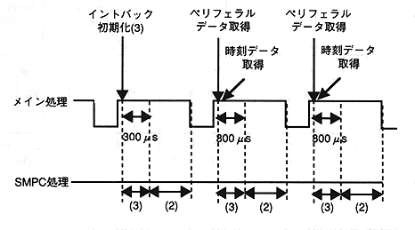
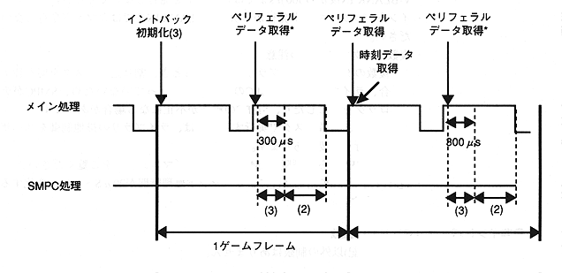

Main processing
Intback initialization (1): Specify system data acquisition
Intback initialization (2): Specify peripheral data acquisition
Intback initialization (3): Specify peripheral data acquisition + time data acquisition
SMPC processing
(1): System data collection processing
(2): Peripheral data collection processing
(3): Time data collection processing
(1) Pattern 1
* If the game frame is 1 frame

* If the game frame is 2 frames
Peripheral data acquisition * does not acquire peripheral data.
